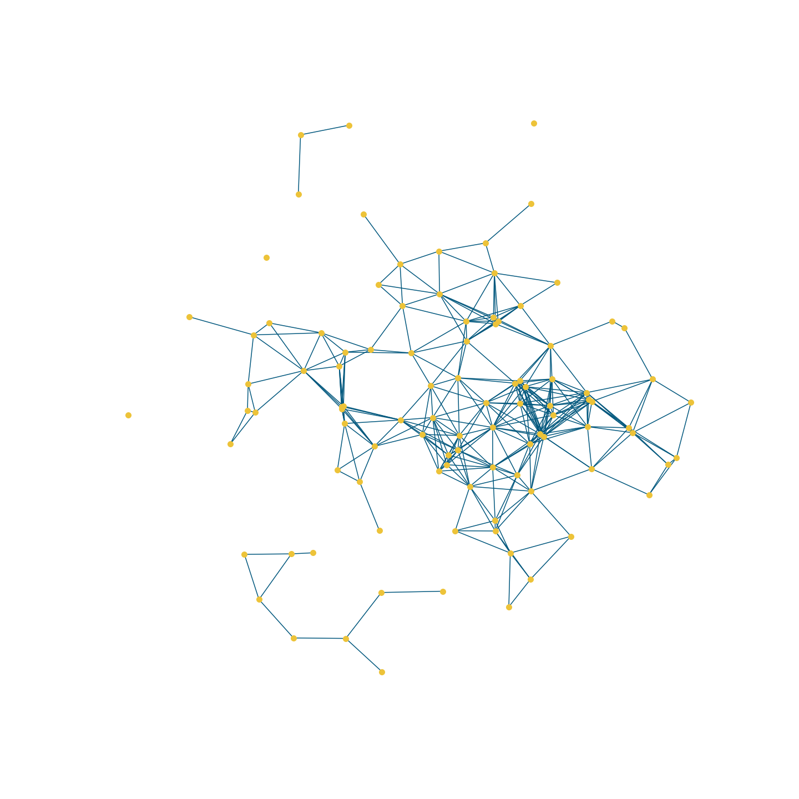

Hi there ! This is my personal website where I talk about some interests of mine. I do not know exactly where this is going but I'll try to update it frequently. Oh and it's ugly on purpose :)
GithubLinkedin
My name is Paul Déchorgnat. I am a 28 years old French Engineer trained at École Centrale Paris (currently CentraleSupélec). I have worked for DataScientest.com for 4 years as a Data Scientist/Data Engineer. I have a degree in Applied Mathematics and a specialization in Data Science. I am not the biggest fan of Machine Learning but I really enjoy what can be done with data. I especially enjoy working with graphs which are, for me, ones of the most elegant objects in mathematics.
Current Interests
Mathematics
My focus is mainly on Graph Theory and Bayesian Statistics.
Graph Theory: I am currently studying Marc Barthélemy's book Spatial Networks. Spatial Networks are Graphs for which points are located into an
Euclidean Space. Distance between nodes can be computed in two ways (in a straight line or by hopping from node to node).
I am also trying to create a Python library to deal with these spatial networks.The source code can be found here.

Bayesian Statistics: Per my training, I am mostly familiar with frequentist statistics (at least somewhat familiar). But after hearing so much good about Bayesian Statistics, Bayesian models, simulations, (...) I've decided
to take a look a it. I am reading Bayes Rules Book. I am also converting R examples from this book to Python code.
Chess
I have been very interested in chess for some years. Currently trying to play a bit less to let place to other interests. Currently 2000 elo on Lichess in every category but I haven't played on Lichess for months. Oscillating between 1650 and 1800 on
chess.com.
Playing mainly:
The Scott
The Advanced French
The Sicilian (dragon)
I'll try to learn more openings in the future.
History
I have always been a fan of history (and even wanted to be an historian when younger). I do not have any particular tropism towards any period. I listen to a lot of conference by french historians (Johann Chapoutot, Christian Ingrao, Nicolas Patin, Michel
Pastoureau, ...) and other institutions (Collège de France, École des Chartes, ...) and recently discovered a wonderful set of podcasts: Passion Médiéviste (I am currently making
my way through Middle Age episodes).
Politics, Anthropology, Sociology
This is one of my main interest: trying to understand how our societies work, alone or together in order to understand political levers (means of action). It links a bit the other interests: Mathematics for measuring or simulating effects, Anthropology
and History to understand how things were to become the way they are today, Sociology to get the base concepts for simulation, Politics for action possibility. In that way, I find Emmanuel's Todd work very interesting, mixing all of this
together to get something that, at least, seems very accurate.
Readings
Currently reading
I am currently reading multiple books, shifting from one to another:
La démocratie disciplinée par la dette, Benjamin Lemoine
Le 18 Brumaire de Louis Bonaparte, Karl Marx
Les luttes de classe en France au XXIe siècle, Emmanuel Todd
Une histoire symbolique du Moyen Âge occidental, Michel Pastoureau
Recently read
I might publish some notes later on those books:
Non fiction (2022):
Nécessaire Souveraineté, Coralie Delaume
Djihadisme Européen, Hugo Micheron
Les nouveaux chiens de garde, Serge Halimi
Feuillets d'usine, Joseph Ponthus
Et les Blancs sont partis, Arthur Frayet-Laleix
Comment s'occuper un dimanche d'élection, François Bégaudeau
Races et histoire, Claude Lévy-Strauss
Libres d'obéir, Johann Chapoutot
Notre joie, François Bégeaudeau
Fiction (2022)
14 Juillet, Éric Vuillard
L'ordre du jour, Éric Vuillard
Une sortie honorable, Éric Vuillard
La guerre des pauvres, Éric Vuillard
Reading pile
This one is too high and too depressing to note.
Websites
I have created several websites over the years. Most of them are not very good but they exist. I have used Heroku for most of them. So here they are ! (I'll try to find the time to link the source codes too)
Blindfold Chess
This website was created for me to learn how to play chess with a blindfold. I never really used it but I am quite pleased with how it turned out. We find all the exercises that are generally offered to learn blindfolded chess. I hope it will be used here by someone: BlindFoldChess.
CodeName
CodeName is another board game that I used to play with friends. During lockdown, I had the idea of creating my own online multiplayer version of the game. It was also an interesting way to learn about web sockets. It is available here.
When I Dream
When I Dream is a board game that I used to play with friends where people must make a player guess cards based on one word clues. I tried to create a website to emulate the game and replace the cars and hourglass. It is also my first experience with the creation of a website with NodeJS. It is available here.
Wine App
Some context: my parents are huge wine lovers. For Christmas 2018, I created a set of cards for my mother so that she could learn about wines, grape types, ... At the same time I was going through the amazing Mega Flask tutorial. So I tried to make my own website using Flask because a website is easier to carry than a set of cards. This gave this Wine App website. It is utterly broken but I'll try to fix it some times soon.
Repositories
I have a lot of repositories on my Github account. Here I'll try to explain some of them.
This repository contains my work on the library Spatial Networks. This library is used to manipulate Graph that are located in space. It is both an occasion to play with spatial graphs but also an opportunity to learn how to develop a Python library. You can see how this library works by going to this notebook.
This repository is a repository that I used for support for a workshop I made on using Twitter data. (The name comes from the contraction of Data and Atelier (Workshop in French)). A Youtube recording of the workshop (in French) is available here.
Azure: I am a certified Data Engineer for Azure (DP203)
AWS: AWS has been an everyday tool for me for 4 years (EC2, S3, DynamoDB, Lambda, IAM, ...)
Other
Obsidian (note taking): I am trying to apply this book techniques. I am currently building a knowledge graph of notes about all my interests. I might publish some part of it in the future.